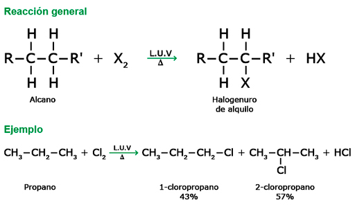
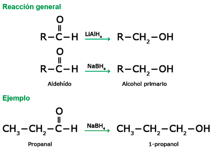

Para que ocurra una reacción química es necesario que los enlaces químicos que conforman las moléculas se fraccionen a través de los mecanismos de ruptura. Así se forman partículas intermediarias, que se transforman en compuestos estables mediante una serie de pasos, denominados mecanismos de reacción.
-
01
Los mecanismos de ruptura y de reacción
Open or Close01.1Los mecanismos de ruptura
Los mecanismos de ruptura son las formas como los enlaces químicos que conforman las moléculas se rompen para formar partículas intermedias, las cuales pueden tener carga eléctrica (iones) o no. Al romperse los enlaces químicos, los electrones que conforman dicho enlace se reparten.
Recuerda
Un ion es una especie química producto de la ganancia o pérdida de electrones. Los aniones tienen carga negativa y los cationes tienen carga positiva.
01.1.1La ruptura homolítica
Una ruptura homolítica se da cuando, al romperse el enlace entre dos átomos de una molécula, cada uno de ellos se queda con un electrón del par implicado en el enlace. De esta forma, las dos especies resultantes, llamadas radicales libres, son eléctricamente neutras. Generalmente, este tipo de rupturas se produce entre elementos que poseen electronegatividades similares.
Como producto de la ruptura homolítica, se forman radicales libres que son partículas neutras.
01.1.2La ruptura heterolítica
Cuando se rompe un enlace entre dos átomos de una molécula y el más electronegativo de ambos se queda con el par de electrones, se presenta una ruptura heterolítica. En este caso, se forman dos nuevas partículas, una de las cuales se queda con el par de electrones enlazantes y genera así una especie con un exceso de electrones con carga negativa, denominada anión, y una especie con deficiencia de electrones con carga positiva, llamada catión.
En la ruptura heterolítica se forman dos nuevas especies, cada una con carga eléctrica producto de la pérdida o ganancia de electrones.
01.2Los tipos de reactantes
Al final de la ruptura heterolítica del enlace en una molécula se forman dos partículas diferentes, una de ellas con un exceso de electrones, lo cual hace que esta especie posea carga negativa (anión). Esta partícula también se conoce como nucleófilo o agente nucleofílico. Por otro lado, la especie que perdió el par electrónico enlazante tiene una carga positiva (catión) y recibe el nombre de electrófilo o agente electrofílico.
01.2.1Nucleófilos
La especie que, como producto de la ruptura heterolítica, tenga un exceso de electrones se considera un nucleófilo, término que, en su etimología, hace referencia a su "gusto" o atracción por las especies cargadas de forma positiva.
El electrón en exceso en el cloro le confiere una carga negativa.
Algunas otras especies neutras que tengan pares de electrones libres también son consideradas nucleófilos, como el agua, los alcoholes primarios y las aminas primarias, entre otras.
Se puede definir un nucleófilo también como una base de Lewis. En una reacción química, los agentes nucleofílicos reaccionan con los agentes electrofílicos y les ceden un par de electrones.
Algunos agentes nucleófilos con carga y neutros.
01.2.2Electrófilos
La especie resultante de la ruptura heterolítica que queda sin el par de electrones enlazantes se denomina electrófilo. El término electrófilo hace referencia a su atracción por los electrones.
Los electrófilos también pueden ser especies neutras en las cuales algunos de los átomos que la conforman tienen orbitales libres, los cuales son capaces de aceptar un par de electrones. Por ejemplo, en el tricloruro de aluminio (AlCl3) el átomo de aluminio posee orbitales libres que le permiten aceptar un par de electrones para formar un enlace.
También se puede considerar como electrófilo la especie neutra que, al tener un átomo muy electronegativo, genere polarización en la molécula de modo que uno de los átomos quede "parcialmente desprotegido" de sus electrones, por ejemplo, en el clorometano (CH3Cl) el carbono queda con una carga parcialmente positiva debido a la alta electronegatividad del cloro, que atrae los electrones.
Algunos electrófilos con carga y neutros.
Un electrófilo es un ácido de Lewis. Los agentes electrofílicos participan en reacciones con agentes nucleofílicos recibiendo el aporte de un par de electrones.
Ácidos y bases de Lewis
Gilbert N. Lewis, en 1923, desarrolló una definición más amplia para los ácidos y las bases. Para él, un ácido es una especie que es capaz de aceptar un par de electrones y una base es una sustancia que es capaz de ceder un par de electrones. Una reacción ácido-base, vista de esa manera, es una simple transferencia de un par de electrones de una especie a otra.
01.3Consolidación
Actividades para consolidar lo que has aprendido en esta sección.
-
02
Las clases de reacciones orgánicas
Open or CloseLa gran mayoría de las reacciones en química orgánica se pueden agrupar en cuatro clases: sustitución, adición, eliminación y trasposición, aunque también se pueden mencionar otras, como polimerización, combustión y oxidación-reducción.
Las reacciones químicas se llevan a cabo en una secuencia de pasos definidos, los cuales se conocen como mecanismos de reacción.
Profundiza
02.1Reacciones de sustitución
Las reacciones de sustitución agrupan todas las reacciones en donde un átomo o grupo de átomos son reemplazados por otros en una molécula. Las reacciones de sustitución pueden ser nucleofílicas o electrofílicas, dependiendo de la forma en que los reactantes que van a realizar la sustitución entren a la molécula.
Un ejemplo de una reacción de sustitución es la halogenación de los alcanos en presencia de luz ultravioleta. En la obtención del clorometano, un átomo de hidrógeno del metano es remplazado por un átomo de cloro.
02.2Reacciones de adición
Bajo el nombre de reacciones de adición se agrupan todas las reacciones en donde dos especies se suman a otra que tenga algún tipo de insaturación.
En las reacciones de adición hay rompimiento del enlace pi (?) y formación de nuevos enlaces. La hidrogenación de los alquenos en presencia de catalizadores como platino, paladio o níquel es un ejemplo típico de una reacción de adición.
Recuerda
Los compuestos insaturados son aquellos que presentan al menos un doble o triple enlace entre dos átomos de carbono. Ejemplos de ello son los alquenos y los alquinos. Por otro lado, los compuestos saturados son aquellos en los que todos los enlaces entre átomos de carbono son sencillos, como en los alcanos. Pueden también existir insaturaciones entre átomos de carbono y nitrógeno (nitrilos) o carbono y oxígeno (cetonas).
02.3Reacciones de eliminación
02.4Reacciones de transposición
Muchas veces las moléculas no son activas en determinada forma estructural y deben entonces reacomodar sus átomos, de modo que se genera una nueva estructura que tiene la misma cantidad de átomos, pero con diferente arreglo espacial (es decir, un isómero). Es lo que se conoce como trasposición.
En las reacciones de transposición se reordenan los átomos de una molécula y se forma una estructura distinta, pero con la misma cantidad de átomos. El n-butano se transforma en isobutano mediante el uso de catalizadores.
Practica
02.5Consolidación
Actividades para consolidar lo que has aprendido en esta sección.
-
03
Los métodos de obtención y propiedades químicas de los hidrocarburos
Open or CloseLos hidrocarburos pueden presentar diferentes tipos de reacciones. Por ejemplo, los alquenos son más propensos a las reacciones de adición y los alcanos a las reacciones de sustitución y de trasposición.
Los métodos de obtención y las reacciones químicas
Los métodos de obtención se refieren a las distintas maneras como se sintetizan o producen los compuestos. Las reacciones químicas se enfatizan en el comportamiento de un compuesto con otras sustancias químicas.
Profundiza
03.1Los métodos de obtención y las propiedades químicas de los alcanos
Los alcanos son muy poco reactivos con otras sustancias. Las reacciones químicas se ven limitadas a unas pocas, debido a su baja afinidad, por ello a veces se denominan parafinas (poco afines). Los métodos de obtención son diversos y se pueden obtener a partir de otros compuestos o sintetizar a partir de otros alcanos menores, para poder alargar la cadena.
03.1.1La hidrogenación de alquenos y alquinos
Se puede obtener alcanos a partir de la hidrogenación de compuestos insaturados, como los alquenos y alquinos, a partir de reacciones adición de hidrógeno, denominadas hidrogenación catalítica. En el caso de los alquinos, se deben adicionar dos moles de hidrógeno para saturarlo completamente.
En la hidrogenación de alquenos, se emplea el platino en forma de óxido de platino (IV), llamado también catalizador de Adams.
En la hidrogenación de alquinos para obtener alcanos, los catalizadores más usados son platino, paladio y rodio.
03.1.2La síntesis de Wurtz
La síntesis de alcanos simétricos a partir de un halogenuro de alquilo fue diseñada en 1885 por el químico francés Adolfo Wurtz. Él descubrió que, al reaccionar sodio metálico con un halogenuro de alquilo, se formaba la sal sódica del respetivo halogenuro y un alcano.
Al reaccionar el bromometano con sodio metálico, se produce etano más bromuro de sodio. Observa que en la síntesis de Wurtz siempre reaccionan dos moles del halogenuro de alquilo con dos moles de sodio metálico para obtener un mol de alcano-simétrico y un mol de sal.
Recuerda
Los halogenuros de alquilo son alcanos que presentan uno o más átomos de halógeno que sustituyen a hidrógenos.
03.1.3La combustión
En la combustión de los alcanos, estos se combinan con el oxígeno del aíre para formar CO2 (combustión completa) o CO (combustión incompleta), agua y energía.
En la combustión completa del metano se liberan 890 kJ de calor (energía) por cada mol de metano.
Recuerda
Una reacción exotérmica es aquella en la cual, al reaccionar entre sí los reactantes para generar los productos, hay liberación de energía, ya sea en forma de luz o de calor. Por el contrario, una reacción endotérmica es aquella en donde los reactantes absorben energía para formar los productos.
03.1.4La halogenación
La halogenación es una reacción de sustitución. Un átomo de un halógeno, producto de la ruptura homolítica de una molécula diatómica (X2), sustituye a un átomo de hidrógeno del alcano. El átomo de hidrógeno saliente, junto con el átomo que ha quedado del halógeno, forma una molécula de un ácido hidrácido. Esta reacción debe llevarse a cabo en presencia de luz ultravioleta o calor.
En la halogenación es posible la sustitución de cualquiera de los hidrógenos. Sin embargo, hay un orden preferencial de sustitución, dependiendo del tipo de carbono que contengan los hidrógenos, así se tiene: terciario > secundario > primario. Por esta razón, en el ejemplo se produjo mayor porcentaje del halogenuro de alquilo secundario.
03.2Los métodos de obtención y las propiedades químicas de los alquenos
En general, las reacciones de los alquenos son de dos tipos: de adición y de eliminación. Dependiendo del reactante, las de adición pueden ser de hidrogenación (adición de hidrógeno) o de hidratación (adición de agua), y las reacciones de eliminación pueden ser de deshidratación (eliminación de agua) o de deshidrogenación (eliminación de hidrógeno).
03.2.1La deshidrogenación de alcanos
Esta es una reacción de eliminación. Se lleva a cabo a altas temperaturas (800 °C aproximadamente). Por ejemplo, en el etano y el propano, para producir eteno y propeno, respectivamente. En los alcanos superiores, la reacción se lleva a cabo a 500 °C.
La deshidrogenación es un proceso endotérmico que consume altas cantidades de energía.
03.2.2La deshidratación de alcoholes
La obtención de alquenos por deshidratación depende del tipo de alcohol. En el caso de los alcoholes primarios, se deben calentar a temperaturas elevadas en presencia de ácido sulfúrico. En los alcoholes secundarios y terciarios, la deshidratación ocurre en presencia de ácido sulfúrico, pero a temperaturas menores que en los alcoholes primarios.
En la deshidratación de alcoholes se debe emplear un catalizador ácido, como el H2SO4 o el H3PO4.
Recuerda
Los alcoholes se clasifican como primarios, secundarios y terciarios. Esta clasificación se hace teniendo en cuenta el tipo de carbono que se encuentra unido el grupo hidroxilo (-OH), por ejemplo, en un alcohol primario este grupo está unido a un carbono primario.
03.2.3La halogenación
En la halogenación de alquenos se obtiene como producto un dihalogenuro de alquilo vecinal. Los halógenos que más se emplean en este tipo de reacción son bromo y cloro, los cuales se disuelven en tetracloruro de carbono (CCl4).
En la halogenación de alquenos, los dos átomos del halógeno se adicionan a los dos carbonos adyacentes de la insaturación.
03.2.4La hidratación
La hidratación de alquenos es una reacción de adición en la que se añade una molécula de agua (H-OH) al doble enlace y se genera un alcohol. Esta reacción se lleva a cabo en presencia de ácido sulfúrico, generalmente diluido al 50%.
En la hidratación de alquenos las partículas se orientan según la regla de Markovnikov. Así el hidrógeno del agua se adiciona al carbono que contenga más átomos de hidrógeno.
03.3Los métodos de obtención y las propiedades químicas de los alquinos
03.3.1La deshidrogenación de dihalogenuros de alquilo
Esta es una reacción que puede ser llevada a cabo en dos etapas y necesita que los halógenos estén ubicados en carbonos vecinales. En la primera etapa se obtiene un halogenuro insaturado. Estos halogenuros son muy estables químicamente, es decir, son poco reactivos, por eso, en este punto se suele inhibir la reacción.
Los halogenuros con un halógeno unido directamente a un carbono que tenga doble enlace se denominan halogenuros vinílicos.
En la segunda etapa del proceso, se usa una base fuerte, preferiblemente amiduro de sodio (NaNH2).
La segunda etapa de la deshidrohalogenación de un halogenuro vinílico requiere de una base fuerte, ya que el compuesto de partida (el halogenuro vinílico) es muy estable.
03.3.2La alquilación de acetiluros de sodio
Esta es una reacción de adición a un alquino terminal (triple enlace en el carbono número uno) para obtener alquinos más complejos. La reacción se lleva a cabo en dos etapas. En la primera se hace reaccionar el alquino con una base fuerte, por ejemplo, el amiduro de sodio en amoniaco líquido, el producto de esta reacción es un acetiluro de sodio.
Los acetiluros son buenos agentes nucleofílicos y participan así en reacciones de sustitución nucleofílica.
En la segunda etapa, el acetiluro de sodio obtenido en la primera etapa ataca a un halogenuro de alquilo para obtener un alquino de mayor tamaño.
La segunda etapa de la reacción solo se puede llevar a cabo con halogenuros de alquilo primarios.
03.3.3La halogenación
La reacción de halogenación de los alquinos en una primera etapa genera un dihaloalqueno vecinal, si se sigue tratando este dihaloalqueno vecinal con otra molécula de halógeno, se produce un tetrahalogenuro de alquilo.
Por lo general, es más factible que se produzca un tetrahalogenuro que un dihalogenuro, pues es más difícil controlar la adición de un solo mol de halógeno.
03.3.4La hidratación
La adición de agua o hidratación de alquinos es una reacción que sigue la regla de Markovnikov. El resultado final es una cetona. Cuando el triple enlace se encuentra entre carbonos internos, se forma una mezcla de dos cetonas.

La hidratación de alquinos se hace en medio ácido, con sulfato de mercurio (II) como catalizador.
Alquinos terminales
En alquinos terminales, el enlace carbono-hidrógeno está ligeramente polarizado, de tal forma que el carbono adquiere una ligera carga negativa y el hidrógeno una carga ligeramente positiva. Por esta razón este hidrógeno presenta característica ácida que reacciona fácilmente con una base.
03.4Las propiedades químicas del benceno
El benceno tiene una alta estabilidad debido al sistema de dobles enlaces conjugados que presenta en su estructura química. No presenta como los alquenos reacciones de adición al doble enlace, pero sí de sustitución de los hidrógenos (como H+), lo que le posibilita preservar el anillo con el sistema de tres dobles enlaces conjugados.
El tipo de reacción que presenta el benceno es de sustitución electrofílica, donde sus hidrógenos (H+) son reemplazados por electrófilos (E+). El benceno puede presentar las siguientes reacciones de sustitución electrofílica: halogenación, nitración, alquilación de Friedel-Crafts y sulfonación.
03.4.1La halogenación
En la reacción de halogenación se sustituye un hidrógeno (H+) por un halógeno (bromo o cloro). Se utiliza como catalizador un ácido de Lewis, cuya función es romper de forma heterolítica el enlace de la molécula diatómica del halógeno, lo que genera los radicales X+ y X-.
Los ácidos de Lewis más usados como catalizadores son: FeCl3, FeBr3, AlCl3 y AlBr3.
03.4.2La nitración
Cuando el benceno reacciona con una mezcla de ácido nítrico concentrado (HNO3) y ácido sulfúrico concentrado (H2SO4), ocurre una reacción de nitración, en donde un hidrógeno del benceno (H+) es sustituido por el ion nitronio (NO2+).
Reacción de formación del ion nitronio (NO2+), que es una especie electrófila.
El nitrobenceno es un compuesto tóxico, con un olor muy parecido al de las almendras.
Nitrobenceno
El nitrobenceno se usa como intermediario en la producción de caprolactama, una de las materias primas para la producción de la fibra sintética nailon 6 y del MDI (diisocianato de difenilmetileno), compuesto que se usa en la fabricación de poliuretanos.
03.4.3La alquilación de Friedel-Crafts
La reacción de Friedel-Crafts fue desarrollada en el año de 1887 por el químico francés Charles Friedel y el químico estadounidense James Crafts. El benceno reacciona con un halogenuro de alquilo y se produce un alquilbenceno, debido a la sustitución de un hidrógeno del benceno (H+) por un radical alquilo (R-).
En la alquilación se utilizan ácidos de Lewis como catalizadores, los cuales pueden ser: FeCl3, FeBr3, AlCl3 y AlBr3.
03.4.4La sulfonación
En la reacción de sulfonación el benceno reacciona con ácido sulfúrico fumante, el cual es una mezcla del 7% de trióxido de azufre (SO3) con ácido sulfúrico concentrado. El reactante electrófilo es el HSO3+ o SO3, este último es buen electrófilo debido a la significativa polaridad positiva que presenta el azufre.
La sulfonación es una reacción reversible y se favorece hacía la derecha si se utiliza ácido fuerte; por lo contrario, si se utiliza ácido diluido, se favorece hacia la izquierda (desulfonación).
03.5Consolidación
Actividades para consolidar lo que has aprendido en esta sección.
-
04
Los métodos de obtención y propiedades químicas de las funciones oxigenadas
Open or CloseEn las funciones oxigenadas es importante resaltar que el oxígeno polariza bastante la molécula y crea así dos centros de carga: uno parcialmente positivo y otro parcialmente negativo, lo que genera compuestos altamente reactivos, como los alcoholes, los aldehídos, las cetonas y los ácidos carboxílicos, entre otros.
04.1Los métodos de obtención y las propiedades químicas de los alcoholes
En los alcoholes la reactividad está asociada con el átomo de oxígeno, porque los electrones libres que posee hacen de él un buen agente nucleofílico. Los alcoholes experimentan principalmente tres tipos de reacciones: sustituciones nucleofílicas del grupo -OH, adiciones nucleofílicas y reacciones de eliminación.
04.1.1A partir de halogenuros de alquilo y base fuerte
La reacción de un halogenuro de alquilo (R-X) con una base fuerte (NaOH o KOH) produce un alcohol.
En la reacción, el halógeno es sustituido por el grupo hidroxilo (-OH), lo que produce el alcohol y la respectiva sal.
La fermentación
La fermentación es una de las formas más antiguas de obtener etanol. Este proceso se hace a partir de una fuente que provea un carbohidrato, como la caña de azúcar, la melaza o el almidón presente en productos como el maíz o la papa. El carbohidrato es transformado por levaduras en etanol y dióxido de carbono mediante un proceso anaerobio (ausencia de oxígeno).
04.1.2La esterificación
04.1.3La oxidación
Los alcoholes primarios se oxidan a aldehídos en presencia de permanganato de potasio caliente (KMnO4), óxido de cromo VI (CrO3) o dicromato de potasio (K2Cr2O7). Los aldehídos obtenidos se pueden seguir oxidando hasta el correspondiente ácido carboxílico.
Para evitar que el aldehído formado pase a ácido carboxílico, se adiciona clorocromato de piridinio (CCP).
Los alcoholes secundarios se oxidan a cetonas, una vez ocurre esto, ya no se pueden oxidar más.
En la oxidación de un alcohol secundario se utiliza como catalizador dicromato de sodio, en medio ácido.
Los alcoholes terciarios no se oxidan, debido a la carencia de átomos de hidrógeno en el carbono funcional.
04.2Los métodos de obtención de los éteres
04.2.1La síntesis de Williamson
En la síntesis de Williamson se hacen reaccionar alcóxidos de sodio o potasio con halogenuros de alquilo, para obtener un éter y un haluro del metal correspondiente. En esta síntesis generalmente se obtienen éteres asimétricos.
En la síntesis de Williamson se presenta una sustitución nucleofílica. Fue desarrollada en 1805 por el químico inglés Alexander Williamson.
04.2.2La deshidratación de alcoholes
Cuando un alcohol se calienta a altas temperaturas en presencia de un ácido mineral, como el ácido sulfúrico (H2SO4) o el fosfórico (H3PO4), se forma un éter simétrico. El ácido deshidrata las moléculas del alcohol, de tal manera que se forma una molécula de agua y una molécula de un éter simétrico.
La formación de la molécula de agua procede de dos moléculas iguales de un alcohol.
Si se varían las condiciones de temperatura (al menos 180 °C), la deshidratación se hace intramolecularmente y el producto final es un alqueno.
04.3Los métodos de obtención y las propiedades químicas de los aldehídos
04.3.1La oxidación parcial de alcoholes primarios
Un alcohol primario se oxida parcialmente cuando reacciona con clorocromato de piridinio (PCC), lo que produce un aldehído.
El clorocromato de piridinio (PCC) es un agente oxidante moderado. Es una mezcla de óxido de cromo VI (CrO3) con piridina y ácido clorhídrico que se disuelve en diclorometano (CH2Cl2).
04.3.2La oxidación
Cuando se usan agentes oxidantes suaves, como el óxido de plata, la función aldehído se oxida a un ácido carboxílico. Este reactante es selectivo con los aldehídos, si en la molécula existe otra función oxidable, el óxido de plata solo ataca al aldehído hasta llevarlo a ácido orgánico. También se pueden usar dicromato de potasio (K2Cr2O7) o permanganato de potasio (KMnO4) como agentes oxidantes.

Los aldehídos se oxidan fácilmente debido a que el hidrógeno del carbono carbonilo se pierde con facilidad.
04.3.3La reducción
La reducción de aldehídos a alcoholes primarios puede hacerse con agentes reductores, como el hidruro de litio y aluminio (LiAlH4) o el borohidruro de sodio (NaBH4).
La reducción de los aldehídos es posible porque se pueden adicionar hidrógenos al doble enlace de carbono carbonilo.
La oxidación y la reducción
La oxidación se define como la pérdida de electrones y la reducción como la ganancia de electrones. También se puede decir que la oxidación es el aumento de enlaces con el oxígeno o la disminución de enlaces con el hidrógeno en un compuesto orgánico. A su vez, la reducción es la disminución de enlaces con el oxígeno o el aumento de enlaces con el hidrógeno.
04.4Los métodos de obtención y las propiedades químicas de las cetonas
Las cetonas son muy susceptibles a ataques (aunque no tanto como los aldehídos), debido a la presencia del grupo carbonilo. Dada la polaridad del oxígeno, tienen más fuerza para atraer electrones para enlazarse. Además, el enlace C=O es más fuerte que el enlace C=C de otros compuestos, lo cual es útil para el desarrollo de las pruebas específicas de distinción de compuestos carbonílicos en el laboratorio.
04.4.1La oxidación parcial de alcoholes secundarios
Los alcoholes secundarios se oxidan fácilmente a cetonas en presencia del óxido de cromo VI (CrO3) en ácido sulfúrico diluido (mezcla conocida como ácido crómico) o ácido acético.
El alcohol secundario pierde en la oxidación dos hidrógenos: uno del grupo -OH y otro del carbono que contiene la función alcohol.
04.4.2La oxidación
04.4.3La reducción
Las cetonas se pueden reducir a alcoholes secundarios por hidrogenación catalítica, usando níquel o platino como catalizadores, a presiones y temperaturas altas. Otra forma de hacerlo es usando agentes reductores como el hidruro de litio y aluminio (LiAlH4) o el borohidruro de litio (NaBH4).

El uso de catalizadores, como platino (Pt) o níquel (Ni), es económico, aunque el proceso de reducción es lento.
04.5Los métodos de obtención y las propiedades químicas de los ácidos carboxílicos
Los ácidos carboxílicos son compuestos muy reactivos debido a la polaridad de los enlaces del oxígeno, a los electrones del enlace pi (?) del grupo carbonilo y a los electrones libres. A su vez, ellos sirven de punto de partida para la síntesis de muchos compuestos y son el punto de llegada de muchas reacciones.
04.5.1La hidrólisis de nitrilos
04.5.2La amidación
Las amidas se obtienen por reacción entre un ácido carboxílico y amoniaco (NH3), que produce así mismo una molécula de agua. Es una reacción de condensación.
En la reacción se obtiene como producto intermedio una sal de amonio, la cual se debe calentar a altas temperaturas para producir la amida.
Recuerda
Las reacciones de condensación son aquellas en donde dos moléculas se unen y forman un nuevo compuesto acompañado de una molécula de agua. También la condensación puede ser intramolecular, es decir, se unen dos grupos funcionales ubicados en la misma molécula, acompañados también de la pérdida de una molécula de agua.
04.6Consolidación
Actividades para consolidar lo que has aprendido en esta sección.
-
05
Los métodos de obtención y las propiedades químicas de los derivados de ácidos carboxílicos
Open or Close05.1Los métodos de obtención y las propiedades químicas de los ésteres
Los ésteres se pueden obtener a partir de cualquier derivado de ácido carboxílico, excepto de las amidas. Como producto secundario se obtiene una molécula de alcohol. Dentro de los métodos de obtención y las propiedades químicas de los ésteres se encuentran: la reacción de esterificación de Fischer, la reducción y la amonólisis.
05.1.1La esterificación
Cuando se forma un éster por la reacción de un alcohol con un ácido carboxílico se le denomina esterificación. Esta reacción es importante efectuarla en medio ácido, para que se dé rápidamente.
Cuando la reacción de esterificación se cataliza con un ácido inorgánico, también se denomina esterificación de Fischer.
Hermann Emil Fisher
Hermann Emil Fisher fue un científico alemán que describió por primera vez la reacción de esterificación, en 1895. Ganó el Premio Nobel de Química en 1902. Fue reconocido por sus estudios sobre síntesis orgánica en farmacología, en los que relacionó áreas del conocimiento como la biología y la química orgánica.
05.1.2La reducción
El proceso de reducción en los ésteres se puede llevar a cabo por hidrogenación catalítica a temperaturas elevadas o por reducción química, cuyo producto en ambos casos es una mezcla de alcoholes.
El alcohol que se produce en mayor proporción es el que proviene de la parte del ácido carboxílico que conforma al éster, es decir, el propanol y el 1-hexanol.
La hidrogenólisis
La hidrogenación catalítica de los ésteres también se conoce como hidrogenólisis (escisión con hidrógeno). En esta reacción se utiliza como catalizador cromito de cobre (CuCrO4) y se requiere altas temperaturas y presiones.
05.1.3La amonólisis
05.2Los métodos de obtención y las propiedades químicas de los anhídridos de ácido
05.2.1La deshidratación de ácidos dicarboxílicos
05.2.2La hidrólisis
En la hidrólisis reaccionan anhídridos de ácido con agua, para producir ácidos carboxílicos. La solubilidad del anhídrido en agua influye en la velocidad de la reacción.
De un mol de anhídrido simétrico se obtienen dos moles de un mismo ácido carboxílico. En el caso que reaccione un mol de anhídrido asimétrico, se producen dos ácidos diferentes (un mol por cada uno).
05.2.3La amonólisis
05.3Los métodos de obtención y las propiedades químicas de las amidas
05.3.1La amonólisis de haluros de ácido
Los haluros de ácido reaccionan en presencia del amoniaco (en exceso) para producir amidas y un ácido hidrácido, el cual es neutralizado por el exceso de amoniaco para generar una sal de amonio.
El carbono del grupo carboxílico del halogenuro de ácido actúa como agente electrófilo en la reacción, razón por la cual es atacado por los electrones libres del átomo de nitrógeno del amoniaco.
05.3.2La hidrólisis
La hidrólisis de amidas se puede llevar a cabo en medio ácido o en medio básico. En los dos casos el ácido o la base son reactantes y no catalizadores. Los productos de la reacción dependerán del tipo de hidrólisis.
En la hidrólisis ácida de las amidas, el tipo de sal de amonio que se produce depende del ácido que se use, el cual debe estar en exceso.
La reacción de la hidrólisis básica de las amidas es semejante a la saponificación de un éster, pues se produce una sal de ácido carboxílico (carboxilato).
05.3.3La reducción
La reducción de amidas se lleva a cabo en presencia de un agente reductor fuerte, como el hidruro de litio y aluminio (LiAlH4), para producir aminas primarias, secundarias y terciarias con un alto rendimiento. El número de carbonos de la amida de partida es el mismo de la amina final.
En la reducción de amidas el grupo carbonilo (C=O) se convierte en un grupo metileno (-CH2-).
05.4Los métodos de obtención y las propiedades químicas de los haluros de ácido
05.4.1Tratamiento de ácidos con cloruro de tionilo (SOCl2)
En esta reacción hay una sustitución del grupo -OH del ácido carboxílico por cloro, y se obtiene: el cloruro de ácido correspondiente, ácido clorhídrico y dióxido de azufre.
Se puede reemplazar el cloruro de tionilo (SOCl2) por tricloruro de fósforo (PCl3), lo que produce el cloruro de ácido correspondiente y ácido fosfórico (H3PO4).
05.4.2La hidrólisis
En la hidrólisis los haluros de ácido reaccionan con agua para producir dos ácidos: uno orgánico y otro inorgánico.
En la reacción de hidrólisis de haluros de ácido se presenta una sustitución nucleofílica en el grupo acilo (R-CO-).
La hidrólisis y los derivados de ácido
Las reacciones de hidrólisis se llevan a cabo con derivados de ácidos carboxílicos, en condiciones ácidas o básicas, según la reacción, y se obtiene un ácido carboxílico.
05.5Consolidación
Actividades para consolidar lo que has aprendido en esta sección.
-
06
Los métodos de obtención y las propiedades químicas de las funciones nitrogenadas
Open or CloseEl comportamiento químico de las aminas se debe a la disposición del nitrógeno para compartir su par electrónico no enlazante. Por su parte, los nitrilos experimentan reacciones de adición nucleofílica y son agentes electrofílicos.
06.1Los métodos de obtención y las propiedades químicas de las aminas
06.1.1A partir de halogenuros de alquilo
06.1.2Degradación de Hofmann
Esta reacción se utiliza para preparar aminas primarias (con un alto rendimiento) a partir de una amida no sustituida y en presencia de una base fuerte con cloro o bromo.

En la reacción de degradación de Hofmann la amida experimenta la pérdida del grupo carboxilo, por ello, la amina primaria que se obtiene presenta un carbono menos.
06.2Los métodos de obtención y las propiedades químicas de los nitrilos
Los nitrilos o cianuros orgánicos se caracterizan por la presencia del grupo ciano o nitrilo (CN), en el que el carbono forma un triple enlace con el nitrógeno. El grupo nitrilo presenta una fuerte polarización (el átomo de carbono es electrófilo), lo que le permite reaccionar con nucleófilos, y se comporta, así mismo, como base de Lewis, debido a la presencia del par electrónico libre en el nitrógeno.
06.2.1Tratamiento de amida primaria con cloruro de tionilo (SOCl2)
06.2.2La reducción
La reducción de nitrilos conduce a la producción de aminas primarias en presencia del hidruro de litio y aluminio (LiAlH4) como agente reductor.
A nivel industrial la reducción de nitrilos se realiza con hidrógeno en presencia de níquel, a temperatura media.
06.3Consolidación
Actividades para consolidar lo que has aprendido en esta sección.
-
07
Competencias
Open or ClosePon a prueba tus capacidades y aplica lo aprendido con estos recursos.
-
Fin de unidad:
Open or Close
repaso